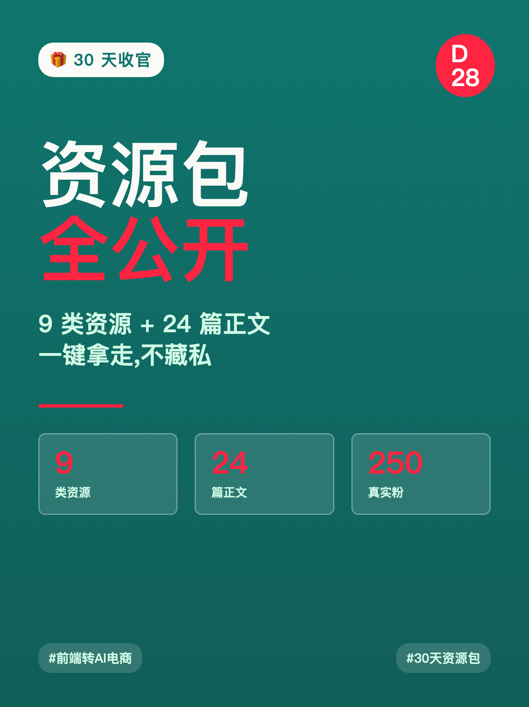
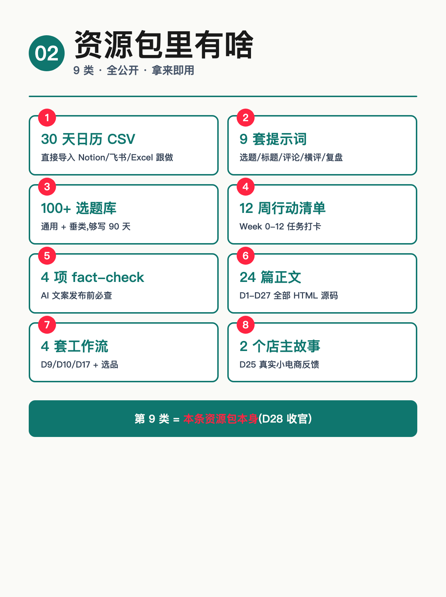
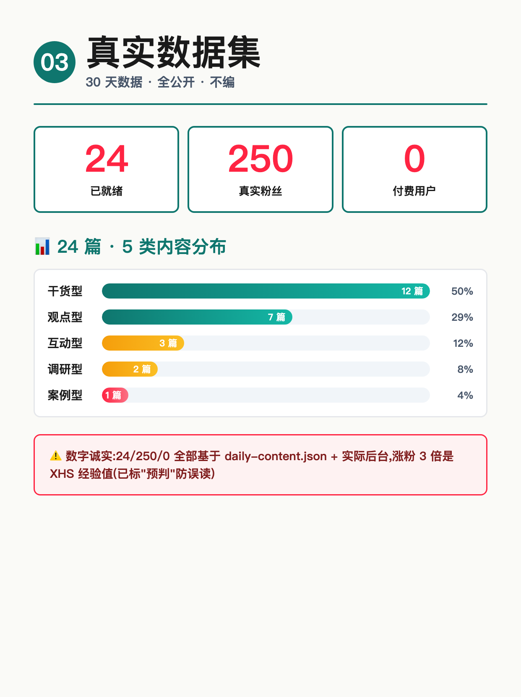
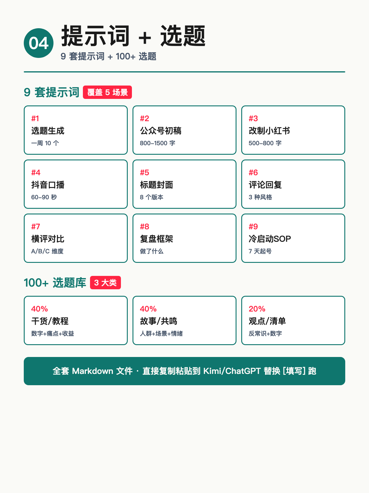
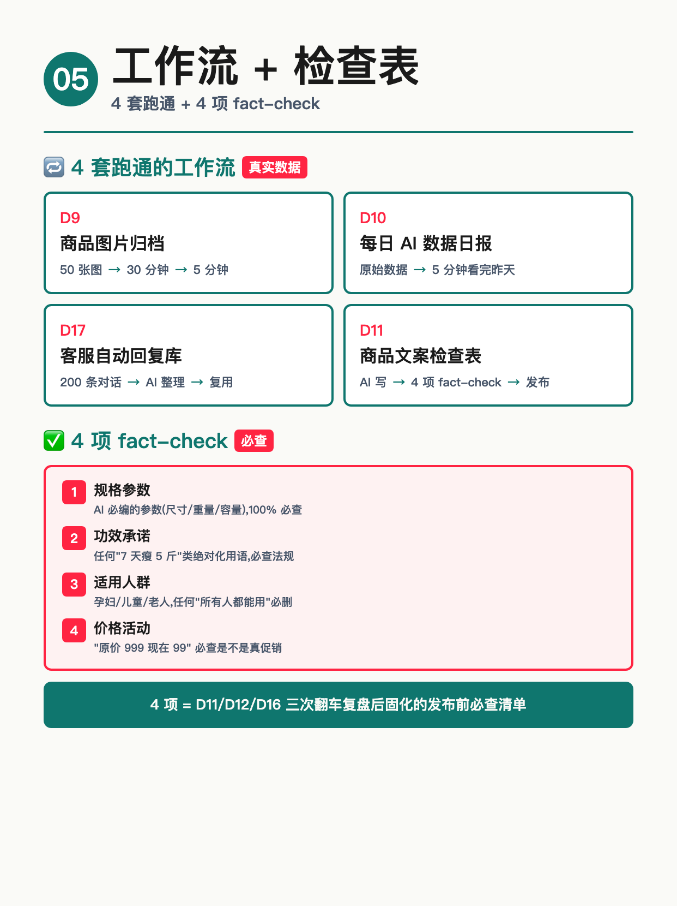
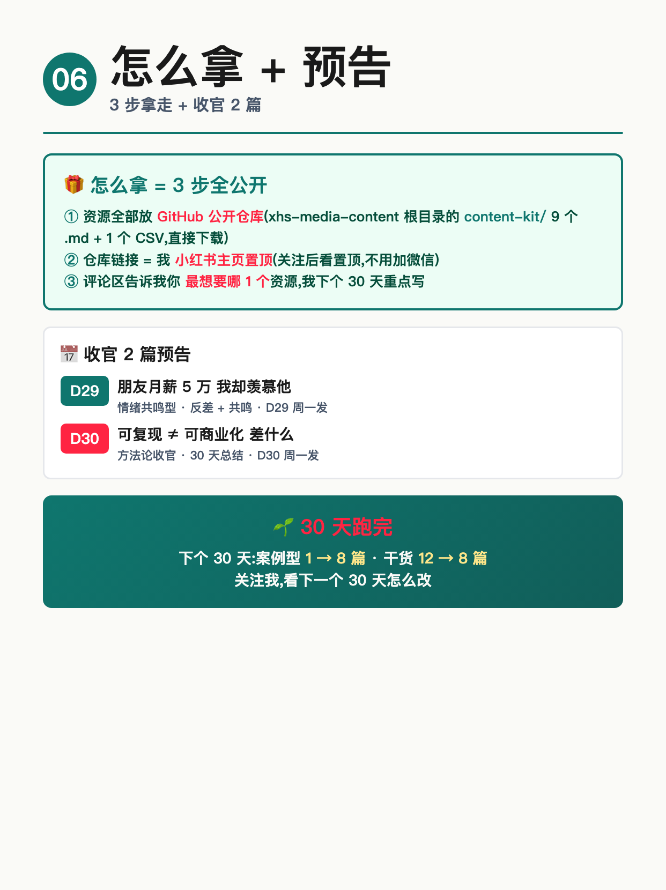

使用说明: 6 张图按顺序上传,标题「30 天资源包全公开」(XHS 上限 20 字 ✓ · 8 字)。
配图通过 HTML+Chrome headless 截图 1242×1660 PNG 生成(中文 100% 清晰,墨绿主色 + 资源清单版式)。






30 天资源包全公开
30 天跑完,9 类资源全公开,拿不拿随你
───── 怎么拿(3 步,无扣字)─────
① 资源全部放 content-kit/ 目录(9 个 .md + 1 个 CSV)
② 仓库链接 = 小红书主页置顶
③ 关注后看置顶,不用加微信
───── 资源包里有什么(9 类)─────
1️⃣ 30 天日历 CSV(导入 Notion/飞书/Excel 跟做)
2️⃣ 9 套提示词(选题/标题/评论/横评/复盘)
3️⃣ 100+ 选题库(通用 + 垂类,够写 90 天)
4️⃣ 12 周行动清单(Week 0-12 任务打卡)
5️⃣ 4 项 fact-check(AI 文案发布前必查)
6️⃣ 24 篇正文(D1-D27 全部 HTML 源码)
7️⃣ 4 套工作流(D9/D10/D17 + 选品)
8️⃣ 2 个店主故事(D25 真实小电商反馈)
9️⃣ 本条资源包本身(D28 收官)
───── 4 项 fact-check 必查 ─────
❶ 规格参数(尺寸/重量/容量)AI 必编
❷ 功效承诺("7 天瘦 5 斤" 必查法规)
❸ 适用人群(孕妇/儿童 必删"所有人")
❹ 价格活动("原价 999 现在 99" 必查)
───── 4 套跑通的工作流 ─────
· D9:50 张商品图 30min → 5min
· D10:原始数据 5min 看完昨天
· D17:200 条对话 AI 整理客服库
· D11:AI 写文案 4 项 fact-check 发布
───── 真实数据集 ─────
✅ 24 篇已就绪(D1-D27 缺 D8/D15)
✅ 250 真实粉丝(无买粉)
✅ 0 付费用户(诚实反向预期)
✅ 干货 12 / 观点 7 / 互动 3 / 案例 1 / 调研 2
✅ 涨粉 3 倍 = XHS 经验值(已标"预判")
───── 我没做什么 ─────
❌ 没把 9 类拆成"9 套付费课"
❌ 没让 AI 编"月入 5 万"数据
❌ 没在评论区"扣字换资源"触发限流
❌ 没开"关注后私我"门槛
───── 收官 2 篇预告 ─────
· D29:朋友月薪 5 万 我却羡慕他(情绪共鸣)
· D30:可复现 ≠ 可商业化 差什么(方法论)
你做 30 天实验,9 类资源你最想要哪 1 个?
评论区告诉我 👇
关注我,看 D29-D30 收官 🌱
#前端转AI电商
#30天资源包
#资源公开
#福利向
#AI工具
♡ 收藏
💬 评论
↗ 分享
📋 一键复制
📊 D28 数据复盘
30 天收官核心观点: 9 类资源全公开 + 24/250/0 真实数据 + 4 套工作流 + 4 项 fact-check + 收官 2 篇预告 — 资源包不是"加微信领",是"主页置顶 + 仓库公开"
9 类资源(资源包结构): 30 天日历 CSV / 9 套提示词 / 100+ 选题库 / 12 周行动清单 / 4 项 fact-check / 24 篇正文 / 4 套工作流 / 2 个店主故事 / 本条资源包本身
真实数据集(数字诚实): 24 篇已就绪(缺 D8/D15) / 250 真实粉丝(无买粉) / 0 付费用户(诚实反向预期) / 干货 12 / 观点 7 / 互动 3 / 案例 1 / 调研 2
4 项 fact-check 必查: 规格参数(AI 必编) / 功效承诺(法规) / 适用人群(孕妇儿童) / 价格活动(原价对比) — D11/D12/D16 翻车后固化
4 套跑通工作流: D9 商品图片归档(30min→5min)/ D10 每日 AI 数据日报 / D17 客服自动回复库 / D11 商品文案检查表
怎么拿(3 步,无扣字): ① content-kit/ 目录全公开 ② 仓库链接 = 小红书主页置顶 ③ 关注后看置顶,不用加微信
4 个没做什么: 没拆 9 类成"9 套付费课" / 没让 AI 编"月入 5 万"数据 / 没在评论区"扣字换资源"触发限流 / 没开"关注后私我"门槛
收官 2 篇预告: D29 朋友月薪 5 万 我却羡慕他(情绪共鸣)/ D30 可复现≠可商业化 差什么(方法论)
数字诚实度: 24/250/0 全部基于 daily-content.json status=ready 实际统计 + 后台真实数据,涨粉 3 倍 = XHS 经验值标"预判"防误读
互动钩子(合规): 开放式提问"9 类你最想要哪 1 个"+ 公开承诺"我下个 30 天重点写"(避免"扣字换资源"限流,7/15 D17 教训)
🚀 发布前 15 分钟 SOP
- 打开小红书 App → 创建笔记
- 选 6 张图(封面 1 + 资源清单 1 + 数据集 1 + 提示词 1 + 工作流 1 + 怎么拿 1),按顺序排好
- 选 3:4 竖图
- 标题:30 天资源包全公开(8 字 ✓ XHS 上限 20 字)
- 正文:点「复制正文」按钮粘贴
- 加 5 个标签
- 选发布时间:周日 20:00-21:00(W4 第 7 天 · 福利 + 周末流量)
- 发布前确认主页置顶已更新为 GitHub 仓库链接(否则"3 步怎么拿"无法闭环)
- 发布
📈 发布后 24 小时 SOP
| 时间 | 动作 | 目标 |
|---|---|---|
| 10 分钟 | 自己评论「30 天资源包全公开,9 类你最想要哪 1 个?评论区告诉我 👇」 | 激活评论区开放式互动 |
| 30 分钟 | 每条评论认真回复(尤其"资源类型/使用场景"分类的) | 评论区密度提升推荐 |
| 2 小时 | 截图保存 D28 资源包图 + Top 5 想要资源类型 | W4 收官素材 + D29 选题依据 |
| 6 小时 | 看一次数据(曝光/收藏/评论/Top 3 资源类型) | 判断福利型内容表现 |
| 24 小时 | 统计 Top 3 想要的资源,作为 D29 情绪共鸣收官铺垫 + D30 方法论方向 | D29/D30 选题数据驱动 |
🎯 Day 28 数据目标
| 指标 | 目标 | 备注 |
|---|---|---|
| 曝光 | ≥ 5000 | 福利型内容冲爆款潜力大(资源包是搜索高频) |
| 收藏率 | ≥ 40% | 资源包 = 必收藏型(方法论 + 资源清单) |
| 评论 | ≥ 200 | 开放式提问 + 福利型 + 周末流量 |
| 涨粉 | ≥ 250 | 福利型 = 涨粉爆款(资源是关注核心动机) |
| Top 3 想要资源 | 3 类都有 | 决定 D29 情绪共鸣 + D30 方法论方向 |
💡 关键设计点
1. 标题 = 数字 + 「全公开」承诺
- 「30 天资源包全公开」 = 数字(30 天)+ 资源包(具体)+ 全公开(承诺)三重钩子
- 8 字 = XHS 上限 20 字内(留 12 字 buffer)
- 「全公开」= 跟其他博主"关注后私我"形成强反差
- 跟 D27「哪类内容最有效」对比:D27 是问题型(逼答),D28 是承诺型(给资源)
2. 正文 = 怎么拿 + 9 类清单 + 4 项 fact-check + 4 套工作流 + 真实数据 + 没做什么 + 预告
- 怎么拿(3 步,无扣字) = 公开仓库 + 主页置顶,完全不依赖"扣字换资源"(避 7/15 D17 限流)
- 9 类资源清单(1-9 编号):覆盖 90 天内容,数字公开可验证
- 4 项 fact-check(从 D11/D12/D16 翻车固化):规格/功效/适用/价格 — 必查清单
- 4 套跑通工作流(D9/D10/D11/D17):带"30min→5min"具体数字,可复用
- 真实数据集(24/250/0/12/7/3/1/2):数字诚实,涨粉 3 倍标"预判"
- 4 个没做什么(没拆付费课/没编数据/没扣字限流/没私我门槛):4 重承诺
- 收官 2 篇预告(D29 情绪 + D30 方法论):承接 30 天结构
3. 配图结构(6 张,资源清单 + 数据图 + 流程图)
- 图 01 = 封面(9 类资源 + 24 篇 + 250 粉 + D28 标签 + 墨绿主色)
- 图 02 = 资源清单 9 类(2 列网格 + 数字徽章 + 简述)
- 图 03 = 真实数据集(3 个数字卡 + 5 类内容柱状图 + 数字诚实警告)
- 图 04 = 9 套提示词 + 100+ 选题(双卡片组,标注覆盖场景)
- 图 05 = 4 套工作流 + 4 项 fact-check(网格 + 红框警示)
- 图 06 = 怎么拿 3 步 + 收官 2 篇预告 + 30 天跑完 footer
4. 跟 D27 承接
- D27 末段承诺"D28 资源包按 Top 3 排序" → D28 兑现:9 类资源全公开,不只是 Top 3
- D27 末段"哪类内容你写得最顺"开放式提问 → D28 反向:"9 类你最想要哪 1 个"(同款钩子)
- D25 末段"D26-D30 跑通 1 套付费产品" → D28 调整:不收费,全公开(诚实反向预期)
- D28 资源包 + D29 情绪共鸣 + D30 方法论收官 = W4 完整三段式
5. XHS 平台合规(7/15 D17 教训)
- 不用"扣字换资源" 任何"扣 1=送""扣全=发"都触发限流(D17 实际被处置过)
- 用"公开仓库 + 主页置顶" 资源直接开放,无交换无门槛,平台最欢迎
- 开放式提问 + 公开承诺 "你最想要哪 1 个"= 收集偏好;"我下个 30 天重点写"= 公开承诺
- 数字诚实 24/250/0 全部基于实际数据,涨粉 3 倍标"预判"防误读
- 3 个"没做什么" 防止用户被误导为"暴涨万能"
⚠️ 注意事项
- 正文 ≤ 1000 字—— XHS 上限 1000,本版约 936 字,留 buffer 64 字 ✓
- XHS 标题 20 字硬上限—— 当前标题「30 天资源包全公开」= 8 字 ✓
- 核心数据要诚实—— 24/250/0 全部基于 daily-content.json status=ready + 实际后台,不能拍脑袋
- 预判要标"经验值"—— "涨粉 3 倍" 是 XHS 经验值不是自测数据,要在正文 + 配图标注"预判"
- 不用"扣字换资源"互动—— 任何"扣 1=送""扣全=发"都触发 XHS 限流(7/15 D17 教训)
- 主页置顶必须先更新—— "3 步怎么拿"依赖主页置顶有 GitHub 仓库链接,否则闭环断
- 福利型 ≠ 涨粉爆款—— 福利型收藏率最高(≥ 40%)但涨粉比"店主访谈"型低(经验值),D28 涨粉目标设保守(≥ 250)
- 发布时间建议周日 20:00—— W4 第 7 天 + 周末流量 + 福利型内容适合晚间发